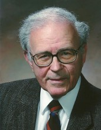

Please note: the AAS Obituaries are temporarily being hosted on this website while their full content is being ingested into the PubPub publishing platform newly adopted by the Bulletin of the American Astronomical Society. When the migration is complete, your existing links will take you to the final, migrated content. Contact peter.williams@aas.org with any questions.
Robert P. Kraft (1927-2015)
Robert Paul (Bob) Kraft, AAS president from 1974 to 1976, died at Dominican Hospital in Santa Cruz, California, on 26 May 2015 of the effects of aspiration pneumonia, following a stroke in February that year. His best-known astronomical discovery was that all cataclysmic variables (CVs) — novae, dwarf novae, and such — are short-period binary systems and that a wide range of their properties could be explained as the result of material from a low-mass star flowing into a disk and accreting onto a white dwarf companion. His work on the topic extended from 1956 to at least 1965, although by that time he was also an expert on the kinematics and other properties of Cepheid variables. In the latter capacity, he was invited to write the "Distribution of Classical Cepheids" chapter for the Galactic Structure volume of the Stars and Stellar Systems compendium, edited by Gerard P. Kuiper.
Kraft was also the first (or among the first) to point out, at the 1964 meeting of the International Astronomical Union (IAU) in Hamburg, that the orbital evolution of some CVs would be dominated by the loss of energy and angular momentum in gravitational radiation. He also provided an “early warning” in his Galactic Structure chapter just mentioned that not all Population I, or “classical,” Cepheids have the same chemical composition, casting doubt on the ease with which they could be used as distance scale calibrators. In addition, he considered the possibility that the canonical value R = 3.0 for the ratio of total-to-selective absorption, or Av /E(B-V), in the Galaxy might not be uniform.
Later in his career, Kraft devoted attention to tracing out stellar chemical properties for various populations by location, velocities, and so forth. He remarked that this was a particularly good task for an observatory director (referring to his own position at Lick Observatory from 1981 to 1991) because, in the five or ten minutes of time a director could expect to have for his own research, you could pick up a spectrogram, examine it closely, assign it a spectral type and metallicity, and put it down in the right pile!
Bob first saw the (probably cloudy) light of Seattle skies on 16 June 1927, the only child of Viola Eunice (née Ellis) and Victor Paul Kraft, a veteran of World War I and an auto mechanic. With encouragement from his mother, he learned to play the guitar, piano, and banjo and appeared on local radio and stage while in grammar school. (Note from the author: This sort of thing is very good preparation for life in research and academe.) Always a strong student, Kraft went on from Roosevelt High School to the University of Washington, where he received a BA in 1947 and an MS in 1949 in mathematics. There he met a journalism major named Rosalie Ann Reichmuth at a student function in the Unitarian church basement. They married in her home town of Billings, Montana, in August 1949. Bob and Rosalie were lifelong Unitarians, Democrats, and social activists. Son Kenneth arrived in 1950 and Kevin in 1954.
Kraft began teaching mathematics at Whittier College in 1949, but added elementary astronomy to the mix, building a photoelectric photometer for the college’s 18-inch reflector telescope. He had already learned some basics of astronomy from the University of Washington’s Theodore “Ted” Jacobsen (at 102, the oldest member of AAS at the time of his death in 2003), joined the Astronomical Society of the Pacific as an undergraduate, and attended the dedication of the 200-inch Palomar Mountain telescope in 1948.
Soon after, Kraft felt the need of further study. Since he was already in Southern California, he enquired at Caltech of the newly-arrived Jesse L. Greenstein about working toward a PhD there; he was told (rightly so, Kraft later wrote in a memoir) that his preparation in physics was inadequate and he should look elsewhere. So in September of 1951 it was off to the University of California (Berkeley), where he studied initially with Otto Struve and received his PhD under George Herbig in 1955 for work on CaII emission from classical Cepheids. Among others who deeply influenced his astronomical development, Kraft mentioned R. M. Petrie, Louis Henyey, Roger and Beverly T. (“BD”) Lynds, Bill and Amelia Wehlau, Merle Walker, Jack Crawford (co-author on the first CV paper), Olin Wilson and Don Osterbrock (on use of the Mt. Wilson 100-inch reflector), Bengt Strömgren, and George Preston. There were also some important books: Russell, Dugan, and Stewart, the text that introduced most astronomers to the field from 1926 until well after World War II; the multi-volume treatise on theoretical physics by Landau and Lifschitz; Trumpler and Weaver’s Statistical Astronomy; and Max Born’s classic text on atomic physics.
After Berkeley came the Wanderjahrs: to Mt. Wilson, Indiana University, and the University of Chicago (with access to the McDonald 82-inch telescope), plus additional influences and collaborations with Marshall Wrubel, John Irwin, James Cuffey, and his first PhD student, Don Fernie; then back to southern California and the staff of the Mt. Wilson-Palomar (Hale) Observatories, at the invitation of Ira S. Bowen, the director who first allowed women to be assigned time at those telescopes. Important colleagues at Chicago and Yerkes had included Gerard Kuiper, W. W. Morgan, Subrahmanyan Chandrasekhar, William Albert “Al” Hiltner, Geoffrey and Margaret Burbidge, Helmut Abt , Joe Chamberlain, and Kevin Prendergast. Still ahead in Kraft’s career path was the world's largest telescope, the Palomar Mountain 200-inch.
The Krafts moved first to Altadena, then to Claremont, and Bob had the satisfaction of teaching stellar spectroscopy and variable stars (a class I took) in the department Jesse Greenstein had said would be too difficult for him as a student! In 1962, Kraft, Mathews, and Greenstein published what is probably the first reference to gravitational radiation in the purely astronomical literature, concerning WZ Sge. The topic was rediscovered and developed by Bohdan Paczyński in 1967 and by John Faulkner in 1971. But as the Los Angeles area smog was getting to be a bit much for the Kraft boys and the authoritarian structure of Santa Barbara Street — the office of the Hale Observatories, now Carnegie Observatories — a bit much for Bob, the Krafts moved back to the relative north, to Lick Observatory, the 120-inch telescope, and a whole new set of colleagues. The farewell dinner for Kraft was a black tie affair and intended to be stag, with no one below the rank of assistant astronomer. Misinformed or defiant, my thesis advisor, Guido Munch, brought me. If the conversation was bowdlerized, it was not obvious.
Albert E. Whitford, who had produced the 1960s AAS decadal report, stepped down as Lick director almost immediately after Kraft’s arrival, and Kraft became acting director from 1968 until Osterbrock arrived in 1973. Following appointments to the 1970s AAS decadal survey committee (chaired by Greenstein) and to the optical astronomy panel (chaired by Abt and others), Kraft agreed to become a candidate for the presidency of the AAS. This was the first time since the society’s founding that there were two candidates, the nominating committee, for decades, having simply designated one person to stand. Kraft won for the 1972-74 term. The loser, rather unfortunately, was Greenstein, who never felt quite the same about the American astronomical community.
In addition to stellar astronomy and astrophysics, Bob Kraft had expert knowledge and love for oenology (wine), and music — particularly Mozart, Beethoven, Berlioz, Stravinsky, and the Beatles. He taught in both of these territories, formally and later informally, to community groups. On a couple of occasions, he provided an oenology lecture and wine tastings during dinner for conferences at UC Santa Cruz (where the Lick folks then "lived"). After the 3rd or 4th glass, they all tasted pretty good.
Kraft’s autobiography says next to nothing about the AAS decadal process and his AAS presidency, but a good deal about his 1981-91 stint as observatory director. This covers the period when UC and Caltech joined forces to establish the Keck Telescopes in Hawaii, and Lick became University of California Observatories. At the outset, UC had four "astronomical campuses," whose faculty were entitled to apply for observing time at Lick. These were Berkeley, Santa Cruz, Los Angeles, and San Diego. I had arrived at Irvine in Fall 1971 with Lick projects in mind, but a firm letter from then-director Don Osterbrock said I could not apply for time. But the 40-inch at Lick had been undersubscribed around 1981, and Kraft planned to allow faculty from non-UC campuses to apply for time there. In addition, in the lead-up to Keck, it was essential to have the chancellors of the other campuses behind the project. These were Santa Barbara, Davis, Riverside, and Irvine. (Merced was yet to come, and San Francisco was and is purely medical.) Thus, in the course of a quinquennial review (on which committee I served) early in his directorship, Kraft declared Lick a UC-wide facility. I was the first, grateful, beneficiary of this policy, although my 120-inch run was rained out, and my 40-inch run mooned out (white dwarfs are faint!!!).
Kraft retired from course teaching at UCSC in 1992 and gave up observing in 1999, but continued his research, particularly on stellar compositions in collaborations with a team at University of Texas, Austin. The 1991-94 nominating committee of the International Astronomical Union asked Kraft to be the candidate for president-elect in 1994. He served in that position from the Hague to Kyoto, as IAU President from Kyoto to Manchester, and as past President from Manchester to Sydney. This last period partly overlapped his struggle with detached retinas, interfering with his ability to travel to the semi-annual meetings of the IAU executive committee. Detached retinas are a somewhat common risk for people with the extreme nearsightedness that accounted for Bob’s 4F draft status in the waning days of World War II.
Kraft received the AAS Warner Prize in 1962, AAS Russell lectureship in 1995, and the ASP’s Bruce Medal in 2005, nearly 60 years after he had first joined the Society. He was elected to the National Academy of Sciences in 1971 and the American Academy of Arts and Science three years later. Asteroid 3712 is named after him.
Rosalie Kraft predeceased her husband, and he was survived by sons Kenneth and Kevin and grandson Cary. They had always been exceedingly generous with financial and other support of organizations and causes they believed in. Late in Bob Kraft's life, these included the non-profit Guitars not Guns, UCSC Symphony League, Santa Cruz AIDS project, Unitarian-Universalist Fellowship, and Watsonville-Aptos Adult Education.
Robert P. Kraft told his own story, up to 2008, in Annual Reviews of Astronomy and Astrophysics (Vol. 47, p. 1-26, 2009). In it, he claims partial credit for the demonstration that HDE 226868 (= Cyg X-1) had to be a B supergiant, not a low-mass helium star, requiring the accreting component to have the mass of a black hole, not a neutron star. Curiously, no mention is made of the paper with the wrong model. The UCSC newspaper provided a short obituary and the Santa Cruz Sentinal newspaper a very extensive one on 30 May 2015. The “good task for an observatory director,” Pasadena departure dinner, expansion of Lick availability to all of UC, wrong model for Cyg X-1, and first-contested AAS presidency stories are my own.
Obituary written by: Virginia L. Trimble (University of California, Irvine)
Additional links:
BAAS Citation: BAAS, 2015, 47, 015